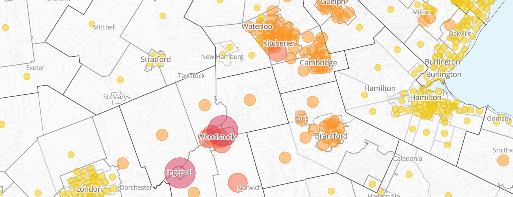
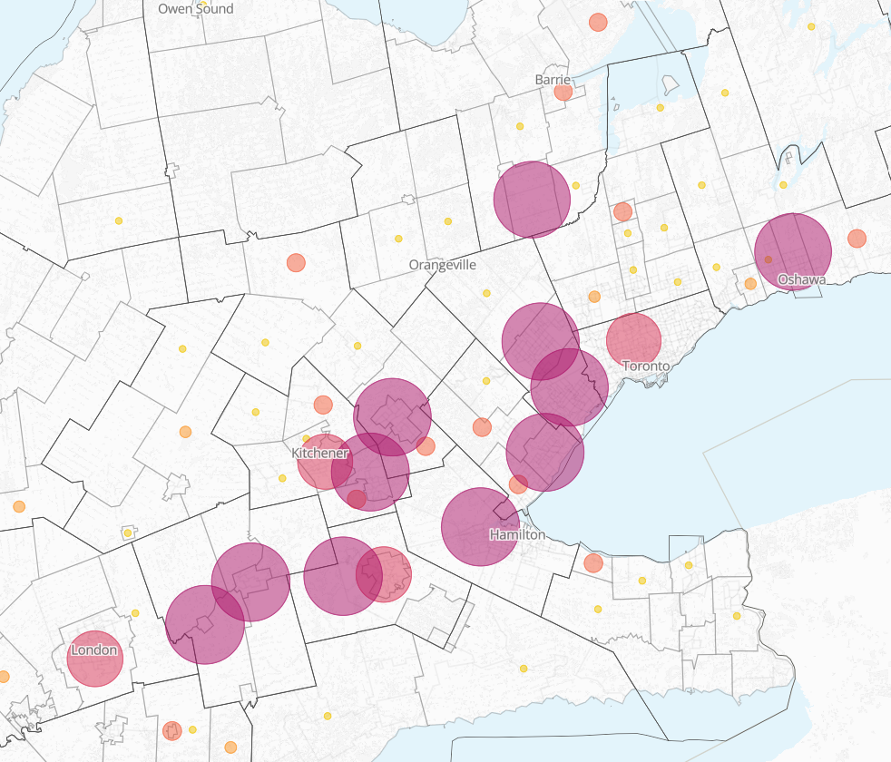
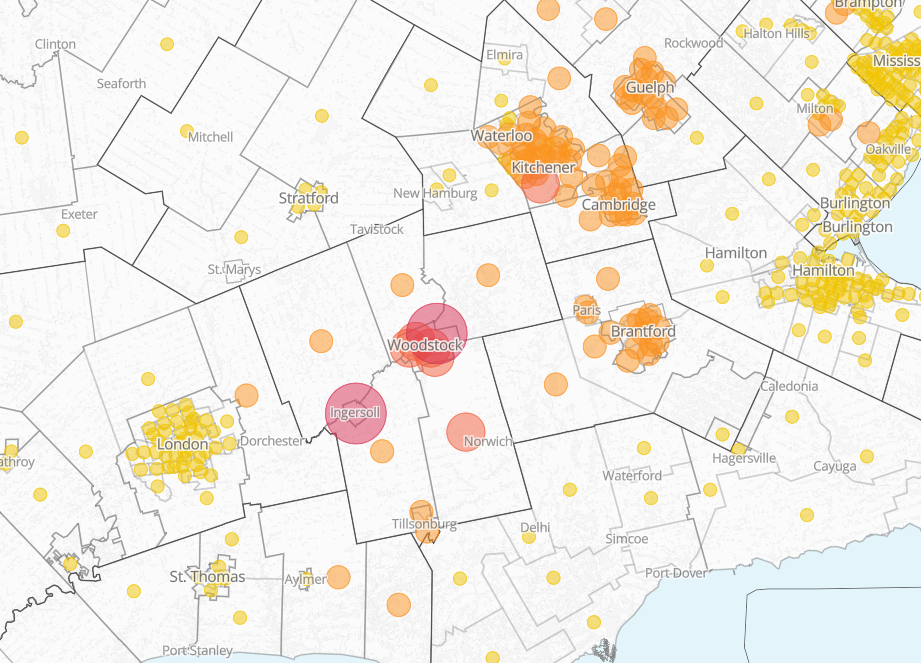
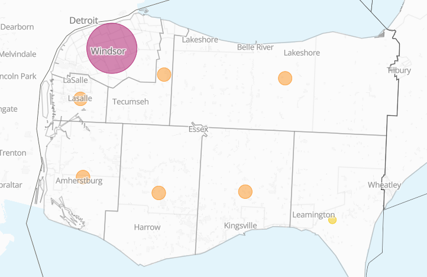
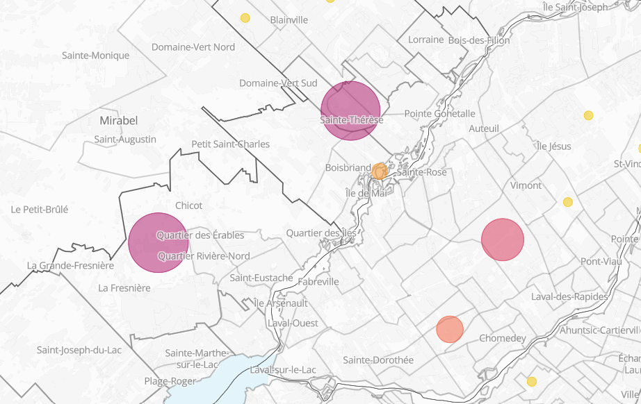

By Yihoi Jung,
Karen Chapple,
Jeff Allen,
Tara Vinodrai
~ February 2026

The impacts of truck tariffs on Canadian cities
An update on the potential local impacts of truck tariffs on jobs and businesses across Canada
Canada's Medium Heavy Duty Vehicles (MHDVs) industry is highly reliant on U.S. exports. This blog post covers the increase in demand for newer trucks due to environmental regulations, the decrease in exports due to the Trump administration's tariffs, and the struggles that Canadian truck manufacturing are facing today.
Once a well protected sector, Canadian MHDV exports were hit with a 25% tariff in November 2025, dramatically weakening relationships with U.S. states involved in the auto industry.
Our maps and analysis underscore the toll of these tariffs on Canadians and the adaptations that Canadians are making, from Ontario jobs moving to the U.S. and the Canadian federal government seeking relationships with other countries.
Background: Canada-U.S. automotive & trucks trade
MHDVs consist of garbage trucks, long haul trucks, and delivery vehicles ranging from classes 3 to 8 (8,501 - 33,000+ lbs). In terms of trade, this sector is often grouped with all vehicles and parts, which account for 13.2% of the total share of exported merchandises to the U.S., the second largest category. In 2024, 87.1% of work truck parts were exported to the U.S..
The trucks trade between Canada and the U.S. had been protected under Section 232 of the Trade Expansion Act since 1962. Under the Obama administration, the U.S. Environmental Protection Agency (EPA) issued greenhouse gas emissions standards across the MHDV models for 2014-2018 and 2019-2027, called Phase 1 and Phase 2 respectively. The sector was able to meet these standards well until 2020, when the COVID-19 pandemic caused lapses in the overall manufacturing industry. Then, in 2021, a semiconductor shortage dropped manufacturing and sales levels across the entire automotive sector, including trucks.
In 2023, Canada and the U.S. announced a $250 million investment to support semiconductor projects, so that manufacturers could acquire the semiconductors needed to get through backlogged orders. Additionally, the U.S. EPA set out Phase 3 regulations that year, which pushed stronger GHG emission standards across MHDVs (as an example, the California Air Resources Board mandated zero emission truck purchases from January 1, 2024). This regulation applied to commercial fleets that generate more than $50 million in gross revenue or have 50 or more fleets. To meet this target, a rush for 2023 compliant vehicle procurement caused a pre-buy spike in imports, which carried over into 2024.
The chart below depicts this phenomenon through the yearly sales of medium and heavy duty vehicles to the U.S..
Automotive tariffs (passenger vehicles and light trucks) were placed in effect in spring 2025, with medium and heavy duty vehicle tariffs coming into effect in the fall. On October 17, 2025, the Trump administration announced tariffs on medium and heavy duty vehicles (25%) and busses (10%) effective November 1, 2025. This category shook the industry as it not only includes the MHDVs but also buses and special purpose vehicles, and so now covers the vast majority of manufactured vehicles. In anticipation of these new tariffs, October sales rose 24.7% compared to September 2025.
In November 2025, Canadian MHDV exports fell 53.8% compared to October 2025, undoubtedly due to the tariffs. The broader automotive sector was also affected by recent semiconductor shortages, resulting in a 6.3% decline in motor vehicle parts sales month over month. The sector also saw a 15.9% decline in motor vehicle manufacturing sales (finished vehicles sold direct to consumers or shipped to the U.S.) from the previous month, which is down 20.7% from November 2024.
Now three months into 2026, fleet companies are preparing for the 2027 mandate announced by the EPA, which will require significant reductions in nitric oxide (NOx) emissions. This has caused Class 8 vehicles (heaviest category) to reach an all time high in orders. Companies like Linamar are avoiding tariffs through meeting Canada-United States-Mexico Agreement (CUSMA) thresholds, but parts regarding NOx / EPA compliance systems are strained by the EPA 2027 standards. With the tariffs on Canada now in place, our relationship with U.S. truck assemblers and original equipment manufacturers is weakened, as companies must either supply parts to comply under CUSMA or pay the tariffed rates.
The chart below represents the prebuy surge and drop for 2025 using export values of trucks via the CUSMA agreement, which reached $5.41 billion in November 2025 (approximately on par with 2024 numbers).
To further the incentive to centralize U.S. manufacturing, the government has offered tariff relief of 3.75% per year if companies finish their truck builds in the U.S.. On February 5, 2026, Carney announced a push for an import credit system, which would alleviate tariffs for companies that meet a certain production threshold. This follows a $2.3 billion program for Canadians to purchase EV vehicles in partnerships with Chinese automakers.
Similar to our preliminary findings, Canada's truck industry is strongly tied to the U.S. due to the geographic convenience and demand of U.S. imports.
Current tariff landscape
While negotiations continue, the U.S. government is still enacting and changing tariff plans. See our current tariffs page for a full list of tariffs currently in place.
In 2026, the situation remains unpredictable. Trucks – once protected under Section 232 of the Trade Expansion Act – are seeing unprecedented effects from the tariffs. On one hand, layoffs are rampant in the industry due to the dependency on Canadian auto exports to the U.S.. On the other hand, the demand for greener vehicles (such as EVs) and zero emission vehicle compliant policies may motivate production in this sector. The question remains: What is the outlook for Canada's auto industry, and are consumers, commercial clients, and government entities ready for the greener future that is promised?
The impact of truck tariffs in Ontario
In Ontario, Canada's largest exporter of trucks, tariff-hit companies have experienced layoffs due to demand-side and operational constraints. For example, in April 2025, General Motors (GM) moved 250 temporary jobs to a plant in Indiana, days after Trump announced a 25% tariff on automotives. Then, in January 2026, GM cut approximately 500 employees in Oshawa, affecting over 1,200 jobs across the supply chain.
For families dependent on the auto industry in Brampton, this news was a tipping point, as Stellanis' Brampton plant had already been on temporary pause for over 2 years. Stellanis is currently under federal government scrutiny as they have been moving production to the U.S. despite contract commitments to invest in Canadian plants.
At the federal level, Industry Minister Mélanie Joly has said that the nation will "invest in other players" and ensure that those displaced by jobs will be supported.
Map findings
Using our mapping and visualization tool we can trace potential tariff vulnerabilities across Canada. The medium heavy duty vehicle section highlights the regional specialization of manufacturing-dependent cities. For example, the Greater Golden Horseshoe (GGH) map displays the proportion of workers (as place of work) potentially affected by the truck tariffs.

Potential direct exposure of tariffs to employees (work) in the truck industry by census subdivision in Southern Ontario.
Click here to view interactive map
Truck manufacturing plants have been heavily affected. Employees in regions like Woodstock work at medium and heavy duty truck assembly facilities like Comtruck and Hino Canada – the impacts on them can be seen through their primary residence.

Employees affected (by primary residence) in Western Ontario.
Click here to view interactive map
Windsor is a major original equipment manufacturer in the automotive industry. Companies like Stellantis, OPmobility Canada, and Linamar produce parts such as steering wheels and braking technology for U.S. companies to then assemble.

Total number of affected employees by their primary residence by census subdivision.
Click here to view interactive map
Montreal also ships class 7 trucks at Kenworth and Peterbilt dealerships through PACCAR's Sainte-Therese plant, where according to their website, a vast majority are exported to the U.S..

Total affected employees (by place of work) in Montreal.
Click here to view interactive map
Our maps show that the impacts of the tariffs are consistent with export reports across the truck industry. Truck manufacturing regions like Guelph, Windsor, and Ingersoll are facing a decrease in manufacturing. The supply chain, constrained by adjacent tariffs in steel and automotives, is hindering truck exports in many ways. While the Canadian government supports the MHDV industry through financial aid, the industry remains volatile and unpredictable due to the codependency of truck production between Canada & the U.S..
Read about the impact of lumber tariffs on Canadian cities, check out the preliminary report on our findings, explore our interactive mapping tool to see the potential impacts across Canadian neighbourhoods, or view the city ranking charts for aggregate impacts.